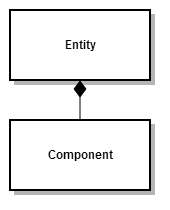

エンティティ-コンポーネント モデル
概要
Entity は、高レベルエンジンで管理されるオブジェクトの基底クラスです。
柔軟性を向上させるために、エンティティはコンポーネントベースで設計されています。エンティティは、データやロジックを持ったコンポーネントを、必要な数だけ持つことができます。

@'Stride.Engine.Entitycomponent' がエンティティに結び付けられます。（1つのコンポーネントを同時に複数のエンティティに追加することはできません。）
エンティティとコンポーネントの作成方法
// エンティティを作成
var myEntity = new Entity();
// モデルコンポーネントを作成（エンティティがモデルを描画できるように）
var modelComponent = new ModelComponent { Model = model };
myEntity.Set(ModelComponent.Key, modelComponent);
// エンティティの位置を設定
myEntity.Transformation.Translation = new Vector3(100.0f, 100.0f, 0.0f);
// エンティティにシーンを追加。以降、そのモデルが描画されます。
Entities.Add(myEntity);